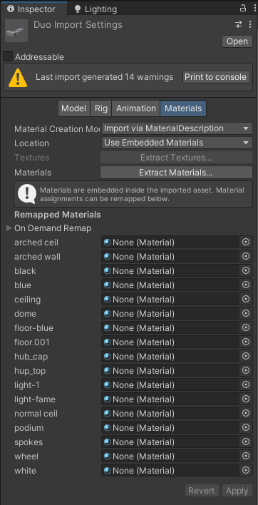
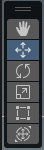
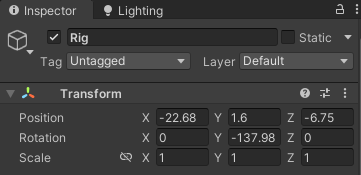
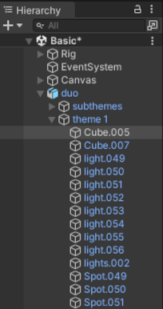
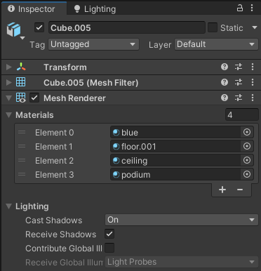
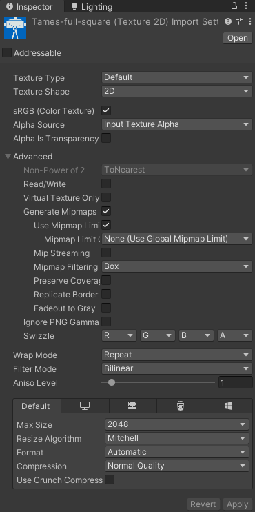

Unity is not able to create 3D models (except basic geometric forms like spheres or cubes). Therefore, you need to have your models designed in another application (Rhino, Blender, Revit, etc.), and then import it into Unity. The easiest way to do this is to drag and drop the 3D model's file from its folder into its destination folder either in Unity's project panel or File explorer. After doing this it takes a few seconds for Unity to process it.
Important: not all CAD/BIM formats are recognised by Unity. If your models are in a BIM application, export them to FBX format before importing in Unity.
Important: if you want to make changes to the 3D model, you need to edit the copied file in Unity's project. Modifying the original file does not reflect into your project.
Important: however, if you modified the original file and import it again into Unity by dragging it into Unity Editor, Unity will create another copy of it that will get things complicated. If you want to reimport the model externally, you'd better copy it via File Explorer.
Unity may need additional settings to import the file smoothly (for the first time). Some of them are very important for Tames to function properly. For the adjustment, click on the imported file in Unity Editor. You will see its properties in Inspector panel (see below). You need to check a few things (do not forget to click Apply after changes you make here):
In the Model tab:
|
In the Material tab you decide how materials in that 3D model are treated:
Please remember that you can change the materials of individual instances of a 3D model in the scene as well (see Placing models below).  |
To place a copy of a model into your scene, you just need to drag it from the Project panel and drop it within the Hierarchy or Scene tab. In the former case, please mind where you drop the model as it may become the child of another object,
Terminology: in Unity, the imported 3D file is called a Prefab and when you create an instance in your scene, the instance is called a Game Object.
After you placed the model into the hierarchy you can move, rotate or scale it using the buttons on the Tool Box (on the Scene tab) or values in its Transform component on the Inspector panel.
|  |  |
| Tool Box | Transform component |
As mentioned earlier, you can change the materials of individual objects on the scene after importing them. Please note that not all objects have materials (some are just empty object. In the example bellow, we can see the materials of the object Cube.005 in the instance of the file (prefab) that we imported earlier.
The material list is under the component Mesh Renderer and like above, you can change materials by clicking on the materials name or the cirvle on their right.
Important: changing the materials here only affect this selected object not other instances of its prefab (the 3D file).
Important: if a material is changed here, later changes in its prefab material will not affect this material.
|  |  |
You can import image andv video files the same way as 3D models: by drag and dropping their file from File Explorer in a folder in Unity Project panel, or directly copying them from File Explorer.
Similarly, you also need to care about some of their settings in the Inspector panel. Four important settings that you should be always mindfull of are (do not forget to click on Apply after finishing changes):
|
 |
| Introduction <<< | >>> How Tames work? |